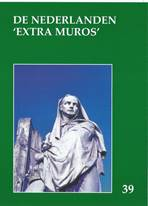

Dit is een
laatste oproep tot hernieuwing van de ledenbijdragen voor
2017, gericht tot diegenen die tot nog toe verstek gaven.
Toetreden kan nog steeds, mits overboeking van de
ledenbijdrage. Even herinneren: de minimumbijdrage bleef
ongewijzigd en bedraagt 29 €. In ruil daarvoor verzekeren we u
andermaal de stipte toezending van het al in mei verschenen
nieuwe Jaarboek de
Nederlanden ‘extra muros’ – het 39e al – en van de vier
nummers van ons kwartaalblad Nieuwsbrief Zannekin.
Vanaf het bedrag van 35 € boeken we u met dank als steunend
lid. Vereffening graag via onze rekening IBAN: BE13 4648 2202
5139 – BIC: KREDBEBB t.n.v. Vereniging/Stichting ZANNEKIN,
Paddevijverstraat 2, 8900 Ieper.
Zannekin-Ontmoetingsdag te Eupen 14 oktober 2017 - EUPEN en het VIERLANDENPUNT - 1815-2017, meer dan een grensgeval
Onze najaar
studiedag heeft in de herfst plaats in het oostelijke deel van
België waar in de voorbije tweehonderd jaar de grenzen meer
dan eens verschoven.
Tijdens
deze dag worden de historische gebeurtenissen sinds 1815, het
jaar van het Congres van Wenen, uit de doeken gedaan. Het
wordt een boeiende dag in een unieke omgeving.
De exacte
locatie moet nog bevestigd worden. Alle details vindt u in de
volgende Nieuwsbrief.
NOTEER ALVAST de datum
van zaterdag 14 oktober 2017.
Jaarboek De Nederlanden ‘extra muros’ 2017
Maurits
Cailliau
Ook dit 39e Jaarboek De Nederlanden ‘extra
muros’ brengt weer een rijk palet aan bijdragen over de
randgebieden van onze Lage Landen die deel uitmaken van ons
geschiedkundig erfgoed. En als steeds openen we met de korte
bijdrage die zowat in een notendop het “programma” van Zannekin verwoordt.
Voor de vierde keer besteedt Cyriel
Moeyaert aandacht aan Het
Nederlands in Sint-Omaars door de eeuwen heen. Dit
vierde luik sluit naadloos aan op zijn vorige bijdragen met
dezelfde titel in de jaarboeken 12 (1990), 21 (1999) en 30
(2008).
Van dezelfde auteur stamt ook de
kortere bijdrage Meer
Standaardtaal in het Frans-Vlaams dan in het West-Vlaams,
dat in zeker opzicht een toelichting vormt op zijn beide
publicaties Nieuw Oud
Vlaams, die op hun beurt een aanvulling vormden op zijn
succesvolle Woordenboek
van het Frans-Vlaams (2005).
In de beide daaropvolgende bijdragen
wordt aandacht besteed aan het thema dat centraal stond op
onze Ontmoetingsdag van 2016 te Belle: de Beeldenstorm.
Vooreerst komt de lezing van Marten Heida aan bod over De Beeldenstorm: een
gereformeerde invalshoek, waarna de inbreng van Guido
Vandermarliere over de Geuzenliederen
voorgesteld wordt. De lezing van Wido Bourel te Belle zal
opgenomen worden in het jaarboek 2018.
Met In het randgebied van de
Nederlanden. Een reportage in de Romaanse gouwen brengt
Maurits Cailliau een merkwaardig documentair verslag uit 1944
boven water, waarin toen vanuit Vlaams-nationalistische hoek
met een voor dat tijdsgewricht opzienbarend verfrissende blik
gekeken werd naar het Nederlandse verleden van onze territoria
beneden de Belgische taalgrens. De toonzetting is van de
auteur, de aangehaalde gegevens stammen van de toenmalige
verslaggever Albert Derbecourt.
Al evenveel, zo niet nog meer,
documentaire waarde bevat het onderzoek van Ruud Bruijns naar
Het bewustzijn van de
Nederlanden en de verloren gebieden in de 18e eeuw.
Surfend doorheen gedigitaliseerde krantenbestanden uit die
tijd kwamen hem tal van onvermoede Heel-Nederlandse
getuigenissen onder ogen, waarbij pertinente aandacht voor de
aan Frankrijk verloren gegane Zuidelijkste Nederlandse
gebieden toen nog als vanzelfsprekend ervaren werd.
Als scharnier tussen de Zuidelijke en
de Oostelijke Nederlanden fungeert de bijdrage van Herman
Vandormael over “Het
wonder van Edingen” – de taalgrens van 1962. Daarin doet
hij verslag over de taal-grensperikelen en –vervalsingen op de
grens tussen Henegouwen en Brabant.
Emile Smit biedt ons met De Kleefse enclaves in
Gelderland inzicht op de totstandkoming van de Duits
Nederlandse grens in deze contreien. Tot de herziene
grensafbakeningen kwam het in 1816-1817 als uitloper van wat
op het Congres van Wenen bedisseld werd.
Het
Graafschap Lingen: een tijdelijk stukje Nederland in
Duitsland is het thema dat Zeno Kolks ons dit keer
aanreikt. We vernemen meer over zowel de geschiedenis als de
kunstgeschiedenis van dit gebied en zijn dwarsverbanden met de
Nederlanden.
Leo Camerlynck brengt ons nog een stuk
verder oostwaarts met zijn Tijdingen uit Oostland.
Achtereenvolgens komen daarin aan bod: Wilamowice, een Vlaams
dorp in Zuid-Polen, Michael Albert en de Flandrer in
Transsylvanië en de Casselnaar Nicasius Elleboudt, een Vlaamse
kerkleider in Hongarije. Een merkwaardig te noemen drieluik.
Vorig jaar startte Marten Heida met
zijn Oostrand-sprokkels,
zijnde een actualiteitskroniek over wat reilt en zeilt binnen
de Duitse Nederlanden, die in dit jaarboek een logisch vervolg
vindt.
Met de Kroniek en boekbesprekingen
sluiten we traditioneel ons jaarboek af.
Cyriel
Moeyaert & Mark Ingelaere
§ Kurt Lapere, knap toponiemenkenner is
van plan om twee atlassen te maken, een met alle straatnamen
en toponiemen van Frans-Vlaanderen en een ander met die van
Artesië en het Boonse (Pas-de-Calais).
§ Het Comité Flamand de France zal samen
met de stad Sint-Winoksbergen plechtig de dertienhonderdste
verjaardag vieren van Winoks sterfdag in september. Ook in
Wormhout waar Winok gestorven is, hebben er plechtigheden
plaats.
§ In Wormhout wordt een nieuwe reus
geschapen die Sint-Winok voorstelt.
§ De oude getijden van Sint-Winok zullen
bij die feestelijke herdenking in Sint-Winoksbergen en
Wormhout gezongen worden door onder meer het dameskoor Cum
Jubilo uit Watou.
§ Het schrijn van Sint-Winok stond
vroeger in de Sint-Maartenskerk in Sint-Winoksbergen. Nu staat
het in het museum in het pandjeshuis. In de kerk had ik de
kans om er een rond detail van te fotograferen. Het stelt de
processie van vroeger voor met het bad van het schrijn in de
Kolme in de buurt van de Draaibrugge. Deze foto verschijnt in
de Kalender van het
Davidsfonds 2018.
§ Het nieuwste nummer van het Bulletin (nr. 111,
juni 2017) – het tijdschrift van het Comité Flamand de France
- staat een “Uutspraeke voor de Jaervergaeringe na
Marcq-en-Baroeul” van Jean-Paul Couché. Daarin staat dat 15
dorpen of steden bereid zijn om alle straatnaamborden
tweetalig te maken. En dat nog tiental andere dat ook willen
doen. Ik hoop alleen dat de oude eentalige straatnaamborden
niet verdwijnen.
§ Er zijn nu 800 mensen in
Frans-Vlaanderen die elk jaar de streektaal leren. Couché
noemt die West-Vlaams. De vraag is of de taal die ze leren
echt West-Vlaams is. Wat zou het mooi zijn als ze eveneens
Nederlands zouden leren waarmee ze veel verder zouden komen en
contact krijgen met de cultuur van 23 miljoen
Nederlandssprekenden. Er zijn ook bedenkingen bij de spelling
en het woordgebruik. Ik geloof niet dat ‘uutspraeke’
‘spreekbeurt’ betekent in het Frans-Vlaams, wel ‘toesprake’.
Als ‘ae’ de weergave van ‘ao’, dan is in ‘uutspraeke’ een
zuivere ‘a’ te horen in Frans-Vlaanderen is ‘a’ voldoende.
§ In het laatste nummer van IJzerhoek heeft Jean
Adriansen twee mooie Vlaamse verhaaltjes gepubliceerd: “Achter
den permis om te ryden” en “Den schooier in ’t onweerte”.
Onder het opschrift van het blad staat terecht: “Voor het
Vlaemsch erfgoed”.
§ Ik heb in dit nummer geboeid het
artikel gelezen over Willem Clito, de minst bekende graaf van
Vlaanderen. Hij schenkt in
1127 een Latijnse keure aan de stad Sint-Omaars, de
zowat oudste keure van Vlaanderen. Wij krijgen er hier een
Franse vertaling van. Willem Clito werd gewond door een speer
in een veldslag bij Oostkamp en stierf enkele dagen later. Hij
werd plechtig begraven in de Sint-Bertijnsabdij naast Robrecht
de Fries. Na de verwoesting van de abdijkerk werd hij
overgebracht naar de kathedraal. Hij werd opgevolgd door Dirk
van de Elzas.
§ hat jongste nummer van Neerlandia
publiceerde Wido Bourel een opmerkelijk artikel: Cathelijntje Trigault
(1604-1689), moeder van alle Europese Amerikanen. Joris
en Cathelijntje trouwden in de Waalse kerk in Amsterdam,
voeren daarna vanuit Texel naar Amerika en landden bij de
monding van de Hudson. De stichting heette ‘Nieuw Amsterdam’.
Ze werden de stamouders van een miljoen Amerikanen. In
hetzelfde nummer komt ook een opmerkelijk interview met de
Vlaamse filosofe (uit Terneuzen) Ad Verbrugge die een heel
sterk pleidooi houdt tegen de verengelsing van het onderwijs.
Het
verhaal van de taal van de Vlamingen, in Frankrijk en elders
/ L’histoire de la langue des Flamands, en France et
ailleurs
In
deze tweetalige, beknopte geschiedenis van de taal van de
Vlamingen neemt de auteur ons mee naar de verre oorsprong en
in de boeiende geschiedenis van de Vlaamse streektaal die in
Frans-Vlaanderen gesproken wordt.
Het
Vlaams / Nederlands gaat in directe lijn terug op het
Frankisch, taal van de stichters van het Frankenrijk, later
afgekort tot Frankrijk. De taal van de Vlamingen en de
Nederlanders is ouder dan het Frans. Het Frankisch werd ooit
gesproken tot voor de poorten van Parijs.
Maar
vandaag de dag is het Frans-Vlaams nog enkel de
spreektaal van enkele duizenden Frans-Vlamingen in Frankrijk.
De auteur schetst het verloop van deze ontwikkelingen,
eeuwenlang voortgestuwd door de kwalijke Franse
centraliserings- en nivelleringspolitiek. Hij legt zich niet
neer bij het identiteitsverlies van de Vlamingen in Frankrijk
en pleit hartstochtelijk voor de bevordering van het
Nederlands, culturele voedingsbodem van het Frans-Vlaams
dialect en taal van haast 25 miljoen Europeanen.
Dit
boek is tweetalig opgevat. Het richt zich tot alle
Frans-Vlamingen met interesse voor de taal van hun ouders,
alsook voor al wie belangstelling heeft voor de regionale
talen in Frankrijk en in Europa. Terwijl de Vlaamse en
Nederlandse lezer een vergeten maar boeiende bladzijde van de
geschiedenis van zijn moedertaal zal herontdekken.
_____________
N.a.v. Titel: OLLA VOGALA. Het
verhaal van de taal van de Vlamingen, in Frankrijk en elders
/ L’histoire de la langue des Flamands, en France et
ailleurs.
Tweetalige
uitgave Nederlands-Frans, Verschenen bij de Bretoense
uitgeverij Yoran Embanner. ISBN 978-2-36747-0474. Formaat:
12,5 x 19 cm, Afwerking: paperback, 160 blz. Prijs:
9 euro + 3,50 euro verzendkosten. Verdere info via: www.widopedia.eu Te
bestellen via overboeking van 12,50 € op rekening BE38 8440
4509 0172 t.n.v. Bourel, Bouwel.
NIEUWE PUBLICATIE
VERSCHIJNT IN HET NAJAAR:
Jacques Buttin, Philippe Ducourant,
Dominique Hemery, Kristof Papin, Jean-Jacques Thybaut &
Jocelyne Willencourt, 1677
- De Slag van de Peene - Een stuk Vlaanderen wordt ingelíjfd
bij Frankrijk,
Uitgave van het Maison de la Bataille,
Noordpeene, 2017.
De laatste slag van Kassel die geleverd
werd tussen de Franse legers onder leiding van “monsieur'
Filips van Orleans (broer van Lodewijk XIV) en Maréchal
d'Humières en de Hollanders onder leiding van stadhouder
Willem van Oranje, vond plaats op 11 april 1677 rondom de
Peenebeek in Noordpeene. De Hollanders waren de stad
Sint-Omaars te hulp gekomen dat werd belegerd door de Fransen
en door dat nieuws verontrust, trok een deel van de Franse
troepen richting Kassel. De Hollanders riepen verzamelen en
vertrokken te Ieper op 8 april 1677. D'Humieres vreesde de
slag te verliezen tegen de Hollanders en riep de hulp in van
de Maarschalk de Luxembourg, wiens optreden beslissend zou
blijken. De Hollanders, na eerst aan de winnende hand te zijn
geweest, verloren uiteindelijk 'de slag van de Peene' en in
het daaropvolgende verdrag van Utrecht (1678) zou Lodewijk XIV
ook dit stuk van Vlaanderen definitief inlijven. Een mooi
Museum in Noordpeene “la maison du Bataille' herinnert aan die
slag en viert dit jaar zijn tiende verjaardag.
 De obelisk herinnerend aan de Slag
aan de Peene, 1677, met als opschrift:
De obelisk herinnerend aan de Slag
aan de Peene, 1677, met als opschrift:
Praelium Peenae ad Csletum XI Aprilis MDCLXXVII
En 1677 le 11 Avril a été dans cette plaine une
Bataille décisive. Elle fut caue de l’annexion de ette contrée
à la France.
Vertaalde: Op 11 april 1677 werd in
deze vlakte een beslissende veldslag geleverd. Deze had de
inlijving van dit gebied bij Frankrijk voor gevolg.
Ter gelegenheid van deze verjaardag
verschijnt een nieuw overzichtswerk over deze soms vergeten
veldslag, de voorgeschiedenis, de slag en de gevolgen op zowel
taalkundig als institutioneel vlak. Een aantal auteurs hebben
samen hun schouders gezet onder dit project.
Van het werk verschijnt zowel een
Franstalige editie: 1677,
la Bataille de la Peene – La Flandre déchirée, als een
Nederlandstalige editie: 1677, De Slag van de
Peene - Een stuk Vlaanderen wordt ingelijfd bij Frankrijk.
Het werk wordt rijkelijk versierd met méér dan 50
illustraties, waarvan vele nooit eerder uitgegeven zijn.
_____________
Boek in A4-formaat, ca 200 pp., rijk
geïllustreerd, met harde kaft. Prijs 20 € + 3 € verzendkosten
(binnen Europa),. te storten op IBAN FR76 1670 6050 1016 3916
7110 201 (Swift code AGR|FRPP867) van Maison de la Bataille –
F. Noordpeene.
Verdere info: Maison de le Bataille, 200 rue de
la Mairie, F. 59670 Noordpeene. E-adres: maisondelabataille-noordpeene@wanadoo.fr
Frans-Vlaamse dorpen, een bezoekje waard
ZEGERSKAPPEL
Tussen Wormhout en Bollezele ligt Zegerskappel. In 1119 staat dit dorp al bekend als ‘Sigeri capella’ waarbij Sigeri betekent: de heer van de zege. De kerk heeft in de loop der tijden heel wat verbouwingen en aanpassingen ondergaan. Ze werd in 1585 nog erg beschadigd door de Geuzen. De datum 1614 die in de noordgevel is ingemetseld getuigt van herstelling. Er zijn in het bouwwerk romaanse, gotische en zelfs renaissance elementen te vinden. Er werd gebouwd met ijzerhoudend zandsteen, gele en rode baksteen, en kalksteen. De twee beuken hebben merkwaardig versierde topgevels. Je vindt er ook heel wat runetekens of metselaarstekens.
Op het kerkhof dat nog
rustig rond de kerk ligt, ligt Justin Blanckaert, een telg van
de Vlaamsgezinde
familie begraven. Op zijn graf is een steen met de tekst:
‘Hier rust een Vlaming’. In de onmiddellijke buurt van dit
graf, dat voor de rest in het Frans is, staat het graf van
Sophia Delphina Bous, die stierf in 1875. Dit graf heeft
alleen maar een mooi Nederlandstalig opschrift. Op dit kerkhof
is ook nog het graf te zien van priester Nestor Depoers die in
de vorige eeuw Nederlandse les gaf in Hazebroek en die een
Nederlands opschrift op zijn graf liet plaatsen.
Niet ver van de kerk,
aan de weg naar Bollezele staat het eenvoudig maar mooi
kasteeltje van Orval, met een 17 meter hoog
renaissancetorentje. Toen Jossine de Moor, vrouwe van Orval,
in 1540 stierf, ging de heerlijkheid over naar de geslachten
de Handtschoewerker, Damman en Quekebijl.
De reus die de volksfeesten van
Zegerskappel luister bijzet is nog maar 20 jaar oud. Zijn naam
is ‘Klakke van zes Kappel’. In 2015 is hij in het huwelijk
getreden met ‘Watten Dame’ uit het naburige Waten waar een
wijk ‘Watendam’ heet.
BOLLEZELE
Bollezele, een dorp in
de Frans-Vlaamse Westhoek, is eveneens bekend als
bedevaartsoord. De St.-Wandregiliskerk uit de 16e eeuw is
verbonden met het miraculeuze beeld van
Onze-Lieve-Vrouwebezoeking, aan wie verschillende mirakels
zijn toegeschreven. Er heeft hier een romaanse kerk bestaan
waarvan de sporen nog te zien waren in het begin van de 20e
eeuw.
Binnen in de kerk vind
je een renaissance orgelkast uit 1669, versierd met
veldbloemen en musicerende figuren, drie retabels, waarvan de
mooiste in de rechter dwarsbeuk, naar Antwerps model. Ook het
Maria-altaar met het grote miraculeuze beeld heeft een
opmerkelijke retabel. Eronder prijken twee halfverheven
beeldhouwwerken die de herders voorstellen en de Drie
Koningen. Het altaar in de noordelijke dwarsbeuk is toegewijd
aan Sint-Anna, patrones van de rederijkerskamer. Het
Nederlands opschrift erop hebben de rederijkers aangebracht.
Het hele westelijke deel van de kerk vanaf de toren en de
dwarsbeuk dateert in 1879-80. De gebrandschilderde ramen (19e
eeuw) verhalen de mirakels op voorspraak van O.-L.-Vrouw van
Bollezele, o.m. weer tot leven gewekte gestorven kinderen, de
verering van Maria door Albrecht en Isabella in 1621, de
kroning van het Mariabeeld in 1902 en de Mariaverschijningen
in Frankrijk. Veel ervan werden door een Brugse firma
vervaardigd. De beschermheilige is Sint-Wandregisilis
(Wandrille) (7e eeuw). De monniken van de
Wandregisilisabdij nabij Rouen wilden de relikwieën van hun
stichter beschermen tegen de invasie van de Noormannen. De
monniken konden naar Vlaanderen vluchten en de Noormannen werden gestopt nabij
Bollezele.
De verering van Maria in
Bollezele is zeer oud. Dat de Heilige Maagd verschenen zou
zijn op de oevers van de IJzer, is de oorzaak van de verering.
Op de plaats waar ze verschenen is staat er een monumentje met
aan de voet een bron. Het beeld dat er stond had men volgens
de legende al twee keer naar de kerk gebracht in een processie
waarbij men rode
pijlen moest volgen. Vandaag de dag noemt men deze weg ook wel
nog “ de processieweg”.
In de winter van 1429
werd een ongedoopt kind begraven. Beide ouders van dit kind
hadden later een droom waarin hen duidelijk werd gemaakt dat
ze het lichaam moesten opgraven. Ze groeven het kind op,
droegen het naar de kerk en op het moment dat ze hem doopten,
werd hij opnieuw levend. Dankzij dit wonder, maar ook door
verschillende genezingen van ziekten en verlammingen, is de
verering begonnen.
Een ander verhaal
vertelt dat in 1510 de pest losbrak in Vlaanderen. In de
parochies van Bollezele, Arneke, Rubroek … was het een echte
epidemie. De inwoners riepen de hulp in van
Onze-Lieve-Vrouwebezoeking en de epidemie stopte.
Een ander voorbeeld van
een wonder is het verhaal van de koning van Groot-Brittannië.
Dankzij meerdere missen opgedragen in Bollezele, kregen ze
uiteindelijk hun langverwachte zoon.
Vandaag de dag wordt er
vooral een beroep gedaan op Maria van Bollezele door moeders
die een kind verwachten.
Elke dag van de novene (24 juni-2 juli)
worden er meerdere missen opgedragen in de kerk en de
laatste zondag van juni is er een processie in de straten van
Bollezele.
____________________
Bron: Nieuwsbrief Davidsfonds
Frans Vlaanderen, voorjaar 2016.
(terugdenkend
aan René de Clercq!)
Reeds lang, reeds lang ligt deze staat,
gekweld door eindeloze kwalen,
en door de roofzucht van de Walen
te lijden aan de ziekte van de haat.
Haat met vervalsing en geweld,
door onze bron, de oude Nederlanden
te scheuren met baldadige handen
ten dienste van een Frans bestel:
dé rover sedert vele eeuwen,
die d' oude Dietse taal van duizend jaar
als erfvijand bedreigt. Maar leeuwen
wapperen weer, gedragen door een schaar
van dappere getrouwen, die de heren van de
haat
en van 't geweld naar ondergang geleiden,
zonder steun van d' Europese technocraat!
Zij zullen volk en land weldra bevrijden!
De vrijheid komt wel zeker, maar de geesten
van 't misleide en bedrogen volk
zijn nog niet klaar. Een Nederlandse tolk
moet helderheid en waarheid 't meest
aan velen schenken. Het échte weten
doet de zieke, slechte staat,
met verachting, zonder eigenbaat,
in zielige dood totaal vergeten!
Zo zullen Vlaanderen én het hele Nederland
ten slotte zegevieren en eigen toekomst
voor de Lage Landen aan de Noordzee-rand
voor eeuwen bouwen en onaangerand!
Erik Verstraete (+)